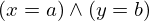
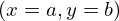
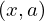

Theorem binary_substitution of type Forall¶
from the theory of proveit.logic.equality¶
see dependencies
In [1]:
import proveit
# Automation is not needed when only building an expression:
proveit.defaults.automation = False # This will speed things up.
proveit.defaults.inline_pngs = False # Makes files smaller.
%load_theorem_expr # Load the stored theorem expression as 'stored_expr'
# import the special expression
from proveit.logic.equality import binary_substitution
In [2]:
# check that the built expression is the same as the stored expression
assert binary_substitution.expr == stored_expr
assert binary_substitution.expr._style_id == stored_expr._style_id
print("Passed sanity check: binary_substitution matches stored_expr")
In [3]:
# Show the LaTeX representation of the expression for convenience if you need it.
print(stored_expr.latex())
In [4]:
stored_expr.style_options()
In [5]:
# display the expression information
stored_expr.expr_info()
| core type | sub-expressions | expression | |
|---|---|---|---|
| 0 | Operation | operator: 1 operand: 3 | |
| 1 | Literal |  | |
| 2 | ExprTuple | 3 | |
| 3 | Lambda | parameters: 4 body: 5 |  |
| 4 | ExprTuple | 21, 23, 24, 25, 26 | |
| 5 | Operation | operator: 6 operands: 7 | |
| 6 | Literal |  | |
| 7 | ExprTuple | 8, 9 | |
| 8 | Operation | operator: 10 operands: 11 |  |
| 9 | Operation | operator: 18 operands: 12 |  |
| 10 | Literal |  | |
| 11 | ExprTuple | 13, 14 |  |
| 12 | ExprTuple | 15, 16 | |
| 13 | Operation | operator: 18 operands: 17 | |
| 14 | Operation | operator: 18 operands: 19 | |
| 15 | Operation | operator: 21 operands: 20 | |
| 16 | Operation | operator: 21 operands: 22 | |
| 17 | ExprTuple | 23, 25 |  |
| 18 | Literal |  | |
| 19 | ExprTuple | 24, 26 | |
| 20 | ExprTuple | 23, 24 |  |
| 21 | Variable |  | |
| 22 | ExprTuple | 25, 26 |  |
| 23 | Variable |  | |
| 24 | Variable |  | |
| 25 | Variable |  | |
| 26 | Variable |  |